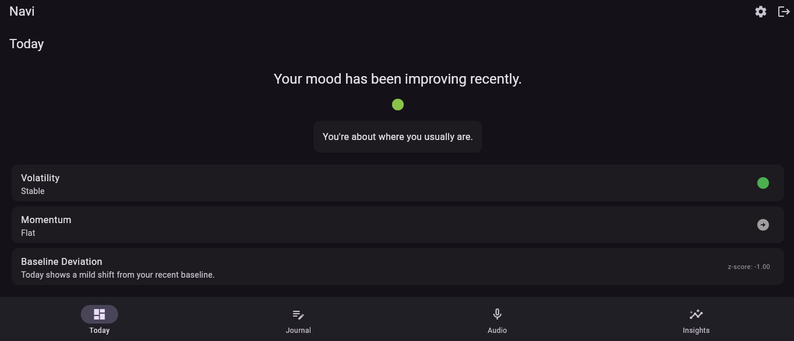
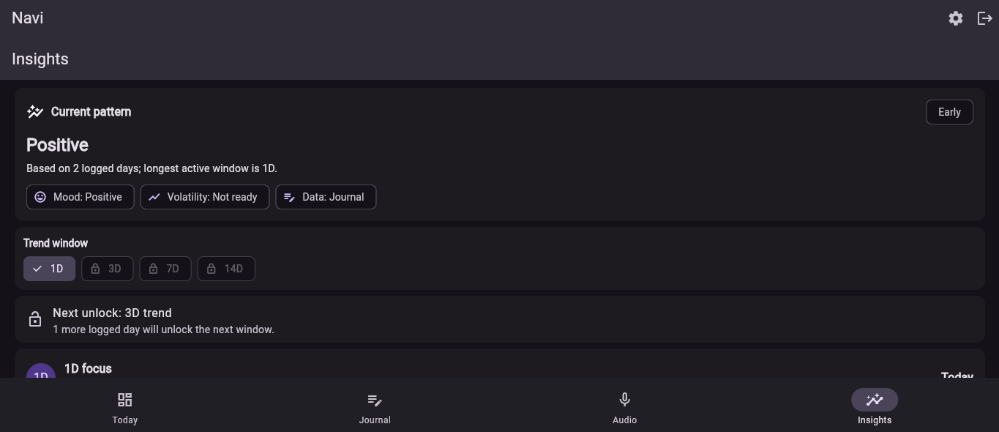
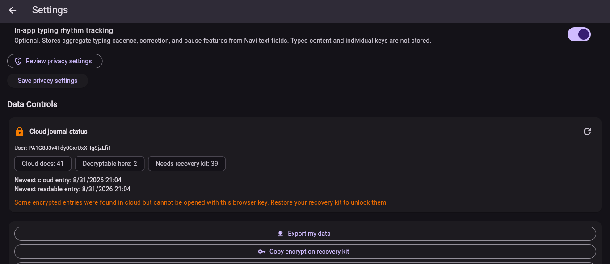
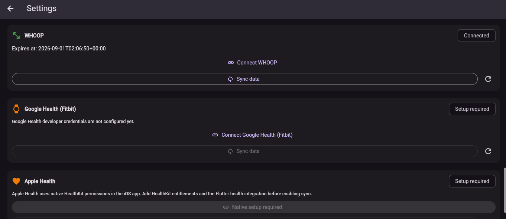
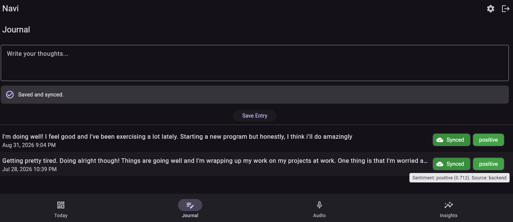

Collect
Optional journal entries, wearable data, audio-derived features, and typing rhythm can contribute to a richer longitudinal record.
LONGITUDINAL MENTAL HEALTH TRACKING
NAVI combines journaling, wearable biometrics, and optional behavioral signals to help users understand how mood and well-being change relative to their own history.
Working MVP • Currently in development and validation

HOW NAVI WORKS
NAVI is designed around within-person change rather than one-size-fits-all population averages.
Optional journal entries, wearable data, audio-derived features, and typing rhythm can contribute to a richer longitudinal record.
Statistical models evaluate trends, volatility, momentum, and deviations from an individual's recent baseline.
NAVI turns structured model outputs into accessible insights that help users explore relationships between physiology, behavior, and mood.
BUILT AROUND YOU, NOT AN AVERAGE
Many mental-health tools capture isolated check-ins. NAVI is being developed to build a personal baseline over time, then identify patterns that matter because they are different for that individual.

MULTIMODAL BY DESIGN
NAVI is built to integrate multiple sources of information rather than treating any single measure as a complete picture of mental health.

PRIVACY BY DESIGN
NAVI is being developed with user-controlled data settings, consent tracking, research opt-in, and clear separation between optional data sources.
NAVI is an early-stage product under active development. It is not presented as a diagnostic or emergency-care tool.

JOURNAL + MODELING
Journal entries can be analyzed for sentiment and incorporated into longitudinal modeling while remaining one signal among many.
The goal is not to replace a user's perspective, but to make changes over time easier to see and interpret.

FROM MVP TO RESEARCH
NAVI has progressed beyond the concept stage to a functioning MVP deployed using Google Cloud Platform and Firebase. The next phase focuses on beta testing, scientific validation, privacy and data-governance requirements, and customer discovery.
With appropriate consent, governance, and institutional partnerships, longitudinal multimodal datasets generated through NAVI could support research into relationships between physiology, behavior, and mental-health trajectories.
ABOUT NAVI
NAVI was founded and independently developed by Cole Rivell, a neuroscience researcher pursuing doctoral training through Johns Hopkins University and the National Institutes of Health.
NAVI is currently an early-stage venture undergoing product development and validation.
cole@navi-mentalhealth.com →CURRENTLY IN DEVELOPMENT